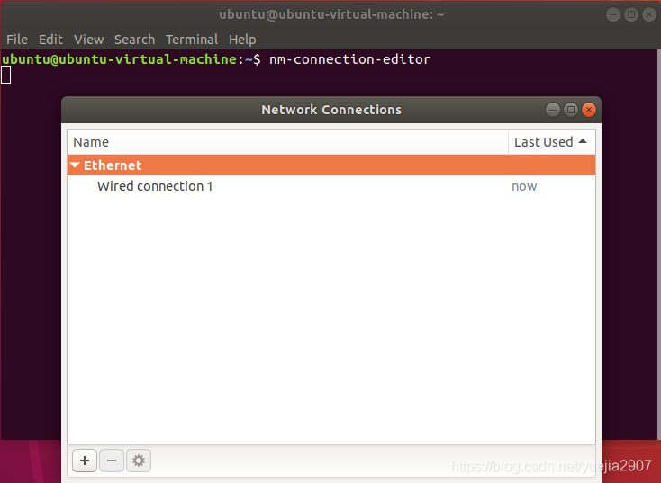
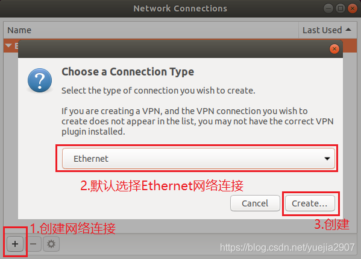
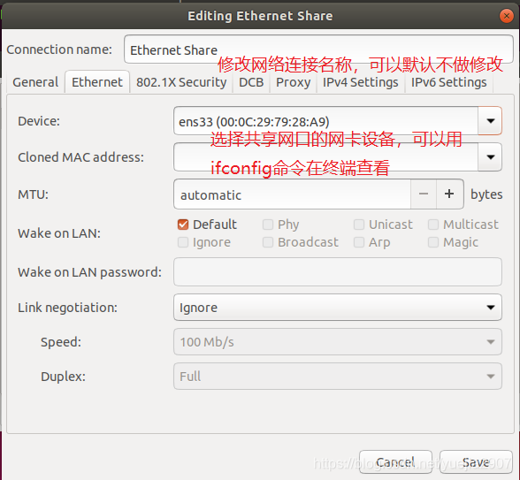
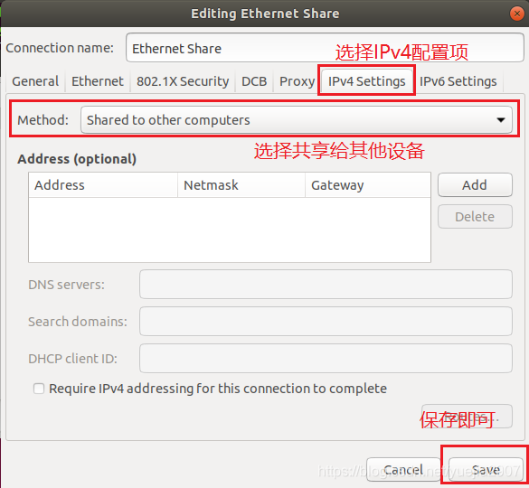

更改mac地址
- 使用ifconfig 查看网口
- 安装macmanager
sudo apt install macchanger - 随机生成一个mac地址
sudo macchanger -r enp60s0enp60s0是网口，-r代表的是随机random的意思，macchanger会帮我们修改成一个随机产生的MAC号 - 修改为指定的mac地址
sudo macchanger -m AA:BB:CC:DD:EE:FF enp60s0\
ubuntu18.04 网口创建网络共享
- 终端输入nm-connection-editor打开网络连接 
- 创建以太网链接 
- 配置网络链接  
- 将其他需要上网的设备通过网线链接到共享网络即可
xvfb ssh
xvfb-run -s "-screen 0 1400x900x24" python <your_script.py>
x forward
ssh -X username@ip
vscode 插件 Remote-ssh
conda install jupyter
github下载提速
git clone https://github.com/Amritpal-001/Reinforcement-learning-projects.git
改为
git clone http://hub.fastgit.org/Amritpal-001/Reinforcement-learning-projects.git
github 下载工具
https://www.python.org/ftp 下载慢
wget https://www.python.org/ftp/python/3.7.5/Python-3.7.5.tgz
改为
wget https://npm.taobao.org/mirrors/python/3.7.5/Python-3.7.5.tgz
pip 下载东西慢
pip3.7.5 install -i http://mirrors.aliyun.com/pypi/simple/ psutil decorator numpy protobuf==3.11^C scipy sympy cffi grpcio grpcio-tools requests --user --trusted-host mirrors.aliyun.com
mkdocs
mkdocs build
mkdocs serve
push sites folders
vscode python ros debug
首先
catkin_make -DCMAKE_BUILD_TYPE=DEBUG
其次点击debug按钮，选择生成新的launch文件。
ｄebug时遇到路径问题,例如rosmsg路径，最好在文件属性里复制路径，不然容易出错
import sys
sys.path.append("/home/pmjd/Downloads/catkin_ws/devel/lib/python2.7/dist-packages")
Tilix doesnt open in the folder from where it is split
Update ~.bashrc (or ~.zshrc if you are using zsh) to execute vte.sh directly, this involves adding the following line at the end of the file.
if [[ $TILIX_ID ]]; then
source /etc/profile.d/vte.sh
fi
On Ubuntu (18.04), a symlink is probably missing. You can create it with:
ln -s /etc/profile.d/vte-2.91.sh /etc/profile.d/vte.sh
sudo dist-upgrade 是毁灭性的，会升级cuda
github init
git config --global user.email "you@example.com"
git config --global user.name "Your Name"
git add .
git commit -m "1"
git push
命令行打开文件管理器
nautilus --browser ~/文档
安装汉语输入法
先在设置里设置language里添加Chinese
sudo apt-get install ibus-libpinyin ibus-clutter
Docker创建容器
构建ubuntu18.04映像
安装依赖
sudo apt-get install debootstrap
sudo apt install docker.io
sudo chmod 666 /var/run/docker.sock
创建ubuntu 18.04 镜像
sudo debootstrap bionic bionic > /dev/null
sudo tar -C bionic -c . | docker import - bionic/smart_eye
测试
docker run bionic cat /etc/lsb-release
查看镜像
docker images
删除镜像
docker rmi [IMAGE ID]
查看容器运行情况
sudo docker ps -a
退出容器
sudo docker stop 容器id
删除容器
sudo docker rm 容器id
启动镜像
docker run -it bionic/smart_eye /bin/bash
退出镜像
exit
文件传递
从本地至docker
docker cp FILE_PATH 容器ID:/root
从docker 至本地
docker cp 容器ID:/root/data.tar /home/user
更改docker image存放路径
sudo service docker stop
sudo touch /etc/docker/daemon.json
daemon.json
{
"data-root":"/home/pmjd/docker"
}
sudo service docker start
Docker更新apt source.list
sudo nano /etc/apt/sources.list
添加
deb https://mirrors.tuna.tsinghua.edu.cn/ubuntu/ bionic main restricted universe multiverse
deb https://mirrors.tuna.tsinghua.edu.cn/ubuntu/ bionic-updates main restricted universe multiverse
deb https://mirrors.tuna.tsinghua.edu.cn/ubuntu/ bionic-backports main restricted universe multiverse
deb https://mirrors.tuna.tsinghua.edu.cn/ubuntu/ bionic-security main restricted universe multiverse
Docker 启动容器
docker start 容器ID
docker attach 容器ID
导出容器快照
docker export c91c33f28594 > smart_eye_docker.tar
容器快照导入为镜像
cat smart_eye_docker.tar | docker import - test/smart_eye:v1
再保存此镜像
docker save -o smart_eye_image_docker.tar test/smart_eye
再加载镜像
docker load --input samrt_eye_image_docker.tar
启动
docker run -it test/smart_eye:v1 /bin/bash
docker 启动bash
docker start c91c33f28594
docker exec -it c91c33f28594 /home/run.sh
docker exec mycontainer /bin/sh -c "cmd1;cmd2;...;cmdn"
docker bash file example
#!/bin/sh
docker run -it --net host --add-host in_release_docker:127.0.0.1 --add-host localhost:127.0.0.1 --hostname in_release_docker --rm promote/smart_eye:v1 /bin/bash -c "/home/run.sh"
启动快捷方式
1.desktop
[Desktop Entry]
Name=Smart_eye
GenericName=3D modeler
Keywords=3d;cg;modeling;animation;painting;sculpting;texturing;video editing;video tracking;rendering;render engine;cycles;game engine;python;
Exec=/bin/bash -c '/home/promote/run.sh'
#Icon=/home/pmjd/Disk/blender-2.90.1-linux64/blender.svg
Terminal=true
Type=Application
Categories=Graphics;3DGraphics;
MimeType=application/x-blender;
界面显示
xhost +
-e DISPLAY=${DISPLAY} -v /tmp/.X11-unix:/tmp/.X11-unix
安装NVIDIA Container Toolkit
distribution=$(. /etc/os-release;echo $ID$VERSION_ID) \
&& curl -s -L https://nvidia.github.io/nvidia-docker/gpgkey | sudo apt-key add - \
&& curl -s -L https://nvidia.github.io/nvidia-docker/$distribution/nvidia-docker.list | sudo tee /etc/apt/sources.list.d/nvidia-docker.list
curl -s -L https://nvidia.github.io/nvidia-container-runtime/experimental/$distribution/nvidia-container-runtime.list | sudo tee /etc/apt/sources.list.d/nvidia-container-runtime.list
sudo apt-get update
sudo apt-get install -y nvidia-docker2
这个时候/etc/docker/daemon.json 内容修改为
{
"runtimes": {
"nvidia": {
"path": "nvidia-container-runtime",
"runtimeArgs": []
}
},
"data-root":"/home/pmjd/docker"
}
重启docker
sudo systemctl restart docker
下载运行：
sudo docker run --rm --gpus all nvidia/cuda:11.0-base nvidia-smi
sudo docker run --rm --gpus all nvidia/cuda:10.1-base nvidia-smi
下载运行tensorflow:
docker run --gpus all --runtime=nvidia -it tensorflow/tensorflow:2.3.0-gpu bash
docker配置网络
--net=host
docker 支持麦克,汉语
docker run -it --volume=/run/user/1000/pulse:/run/user/1000/pulse --user promote --gpus all --runtime=nvidia --name=xiaomeng -e LANG=C.UTF-8 --device /dev/snd promote/xiaomeng:v1.6 /bin/bash
bash 登入ssh
#!/usr/bin/expect
set timeout 3
spawn ssh -X promote@192.168.1.2
expect "*password*" {send "123456\r"}
expect "$ " { send "bash /home/username/1.sh\r" }
interact
Nano 删除行
ctrl+k
Nano显示行号
alt+shift+3
修改默认python版本
删除/usr/bin 下的Python链接
sudo rm /usr/bin/python
用下面命令建立新的链接
sudo ln -s /usr/bin/python3.6 /usr/bin/python
用下面的命令还原2版本
sudo ln -s /usr/bin/python2.7 /usr/bin/python
更科学的做法是：
sudo update-alternatives --install /usr/bin/python python /usr/bin/python2.7 1
sudo update-alternatives --install /usr/bin/python python /usr/bin/python3.6 2
sudo update-alternatives --config python 选择要使用的版本，回车，搞定
设置默认pip版本
sudo update-alternatives --install /usr/bin/pip pip /usr/bin/pip2 1
sudo update-alternatives --install /usr/bin/pip pip /usr/bin/pip3 2
sudo update-alternatives --config pip
pip升级
sudo pip install --upgrade pip
桌面快捷方式
[Desktop Entry]
Name=smart_view
GenericName=3D modeler
Keywords=python;
Exec=/bin/bash -c 'source /opt/ros/melodic/setup.bash;rosrun image_view image_view image:=/smart_eye_view'
#Icon=/home/pmjd/Disk/blender-2.90.1-linux64/blender.svg
Terminal=false
Type=Application
Categories=Graphics;3DGraphics;
MimeType=application/x-blender;
Name[en_US]=smart_view
md公式里添加空格
\quad或者\+空格 或者 
md添加多行公式

<img src="https://latex.codecogs.com/svg.image?\&space;\begin{bmatrix}x\\y\\z\end{bmatrix}=K^{-1}_{3\times 3}\begin{bmatrix}z\cdot(x_c+\delta_{x_c})\\z\cdot(y_c+\delta_{y_c})\\z\end{bmatrix}"/>
\begin{bmatrix}x\\y\\z\end{bmatrix}=K^{-1}_{3\times 3}"/>
md添加行内公式
$\theta$ $\theta$
mkdocs 显示公式
pip install https://github.com/mitya57/python-markdown-math/archive/master.zip
在config.yaml中添加
extra_javascript:
- https://cdnjs.cloudflare.com/ajax/libs/mathjax/2.7.0/MathJax.js?config=TeX-AMS-MML_HTMLorMML
- mathjaxhelper.js
markdown_extensions:
- mdx_math
在docs文件夹下新建mathjaxhelper.js
MathJax.Hub.Config({
"tex2jax": { inlineMath: [ [ '$', '$' ] ] }
});
MathJax.Hub.Config({
config: ["MMLorHTML.js"],
jax: ["input/TeX", "output/HTML-CSS", "output/NativeMML"],
extensions: ["MathMenu.js", "MathZoom.js"]
});
这样就可以直接使用$公式$ 和$$公式$$
wget 断网重连
wget -t 0 -c < 文件地址>
-c 表示断点续连
-t 表示 断了会每经过几秒重新连接连接一次，0表示一直不断重连，有最大连接次数的。
注意： 记得在原来的目录下执行这个命令，才会接着上文下载，找不到文件直接重新下载
指令查看硬盘存储情况
df -h
查看所有硬盘
lsblk
挂载硬盘
sudo fdisk -l #查看磁盘信息
sudo blkid #查看分区
mkdir NeDisk # 创建挂载点
df -kh #查看已有挂载，确定是否已挂载
sudo umount /dev/sda5 #卸载已挂载
sudo nano /etc/fstab
sudo blkid /dev/sda5 # 找到其UUID
#然后,我们按照/etc/fstab文件中的格式添加一行如下内容:
UUID=0001D3CE0001E53B /home/ubuntu/NewDisk ntfs defaults 0 2
#其中第一列为UUID, 第二列为挂载目录（该目录必须为空目录），第三列为文件系统类型，第四列为参数，第五列0表示不备份，最后一列必须为２或0(除非引导分区为1)
sudo mount -a
查看文件夹的大小
du * -sh
ubuntu vscode 终端空白
File -> Preferences -> Setting -> Features -> Terminal -> Inherit Env
ubuntu 查看显卡
lspci -vnn |grep VGA -A 12
vscode python debug 带参
{
"version": "0.2.0",
"configurations": [
{
"name": "Python: Current File",
"type": "python",
"request": "launch",
"program": "${file}",
"console": "integratedTerminal",
"args": [
"--evaluate","/home/promote/NeDisk/radar_depth/pretrained/resnet18_multistage.pth.tar",
"--data","nuscenes"
]
}
]
}
添加"open in code" 右键快捷方式
wget -qO- https://raw.githubusercontent.com/cra0zy/code-nautilus/master/install.sh | bash